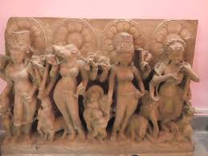

Archaeological museum of Kannauj have vast variety of clayey idols which proves that at ancient time Kannauj was famous for art and culture like Mathura, Kashi and Kaushambi. Right from Maurya age it was a fully developed locality. The clay models found here shows that it was a very progressive district of ancient time, even Historical Chinese visitor Hwenswang praised this district during his visit to India.
As per types of these antiquity idols we can categorized them into following categories.

b. Maurya Age (325 BC)
c. Shudag Age (184 BC)
d. Kushar Age (100 AD)
e. Gupta Age (319 AD to 450 AD)
f. Post Gupta Age (450 to 650 AD)
g. Harsh Age